Radio, Stereo, and Compact Disc: Description and Operation
Audio SystemSystem Description
Overview The audio unit acts as the "processor" for all audio functions. Select audio functions from the audio unit, the audio remote (on steering wheel), or by using the navigation voice control system. The audio display provides the current audio status. For vehicles with navigation, additional audio information is available by touching the audio button on the Navigation Audio Screen. (See the owner's manual and the navigation users guide for more details.)
The XM receiver passes its signal to the audio unit. In addition, it communicates with the audio unit via the GA-Net bus. Any open connections in the GA-Net bus circuit will cause audio and navigation functions to appear inoperative.
For vehicles with navigation, pressing the "open/close" switch on the navigation display panel allows access to the CD slot and PC Card.
A security signal is daisy-chained between the audio and vehicle components for integration into the vehicle's security system.
Speed-sensitive volume compensation (SVC)
Some audio systems are equipped with speed-sensitive volume compensation (SVC). The navigation or audio unit receives the vehicle speed pulse (VSP) from the ECM/PCM. The system processes the speed input and increases the navigation or audio system volume level as the vehicle speed increases to compensate for the various interior noise that occurs at higher speeds. When the vehicle slows down, the volume returns to its normal level. The SVC has four settings: SVC OFF, LOW, MID and HIGH that can be adjusted using the navigation or audio unit. The SVC comes from the factory with the MID set as the default.
To change the audio unit SVC setting, press the "tune folder sound" knob repeatedly until the SVC is displayed, rotate the knob to adjust the SVC to the desired setting (SVC OFF, LOW, MID, or HIGH).
To change the navigation unit SVC setting, press the AUDIO button, and then select the SOUND icon on the navigation display. Press the navigation display to select the desired setting (OFF, LOW, MID, HI).
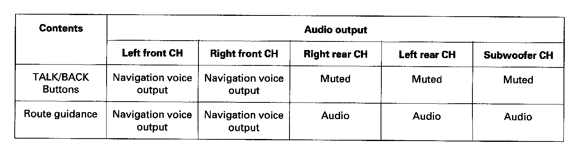
The navigation system allows voice control of the audio, XM, PC Card, and CD player. Voice control commands are communicated on the GA-Net (audio unit). When using the TALK/BACK button, the audio is muted on all speakers and you get navigation sound on the front channels. When using the navigation or route guidance (RG), the front speakers give the navigation sound and the rear speakers continue to play. For more information, see the navigation section. The outline of the interruption function is shown in the table.
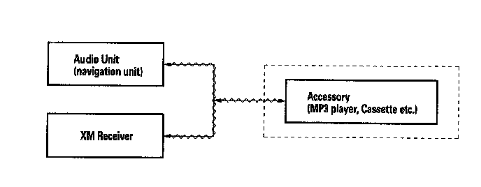
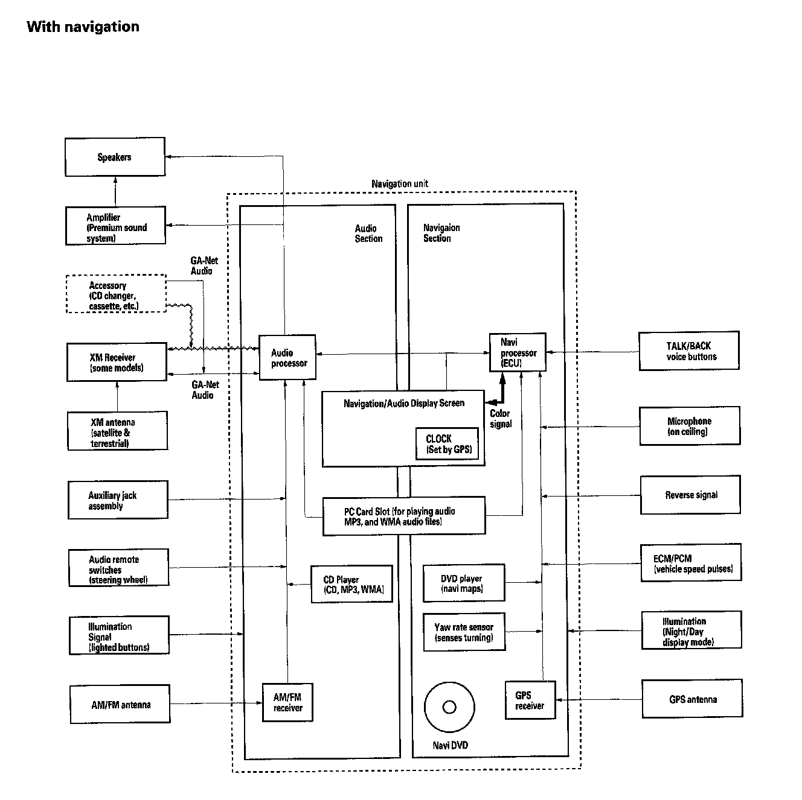
GA-Net Bus Configuration
The GA-Net bus passes audio and navigation commands throughout the navigation and audio components. These commands include navigation touch screen and hard button signals, audio/XM selections by voice, and XM station and music title names. Because the entire bus is "daisy chained" between components (see diagram), any open or short in the GA-Net bus harness will cause any or all of these functions to become inoperative. Naturally the addition of any audio accessory must maintain the continuity of the GA-Net bus by installing the "Y" cable included with the accessory kit.
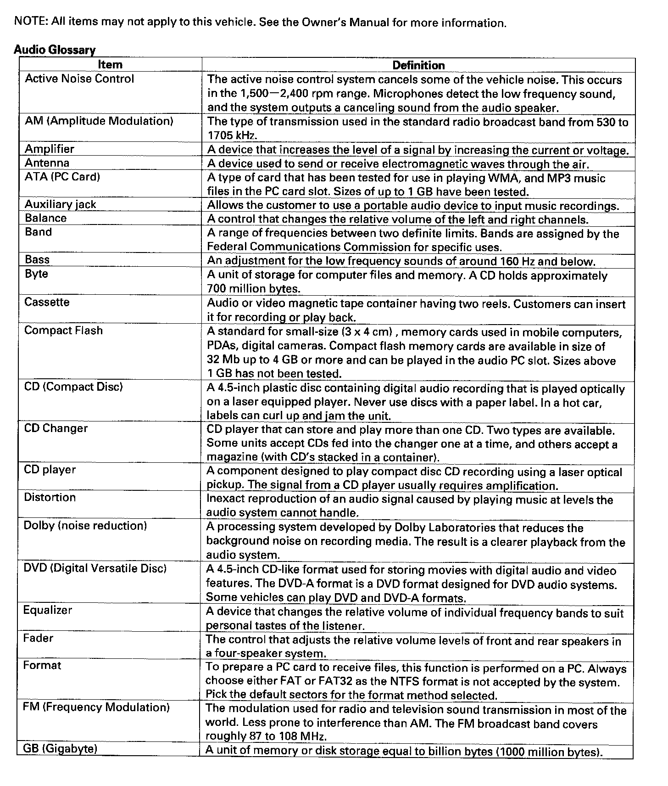
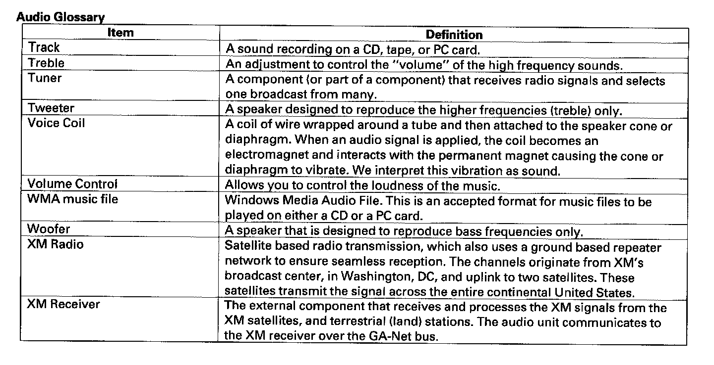
Audio Glossary
Audio Unit Connector For Inputs And Outputs:
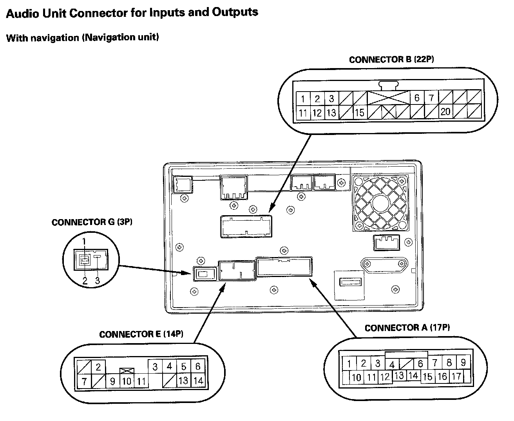
Audio Unit Connector For Inputs And Outputs:
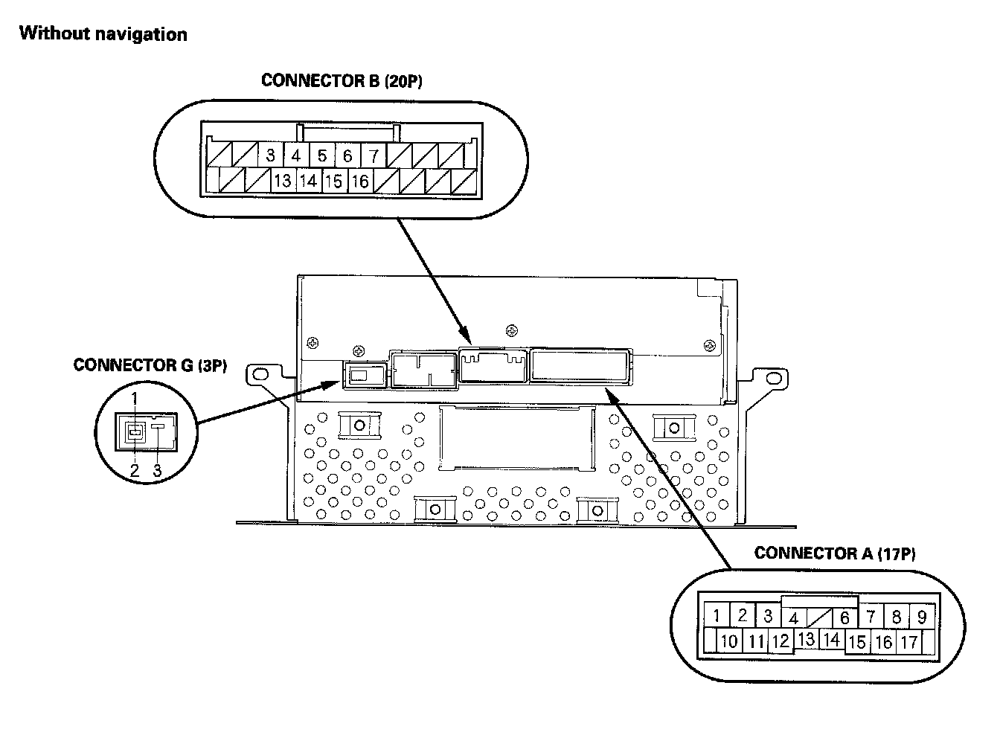
Audio Unit Connector For Inputs And Outputs:
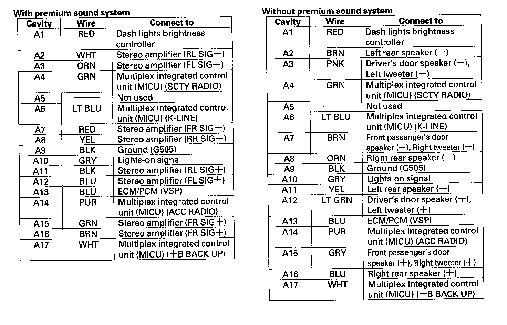
Audio Unit Connector For Inputs And Outputs:
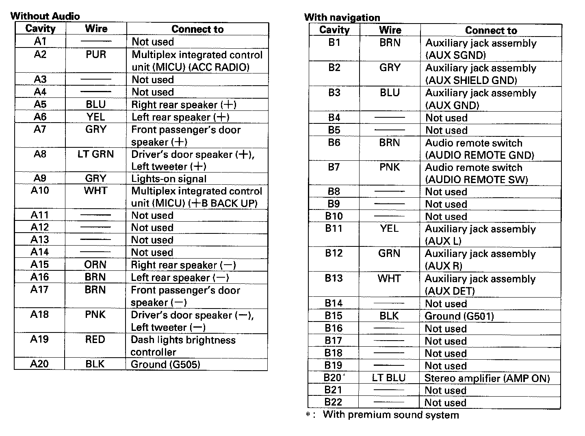
Audio Unit Connector For Inputs And Outputs:
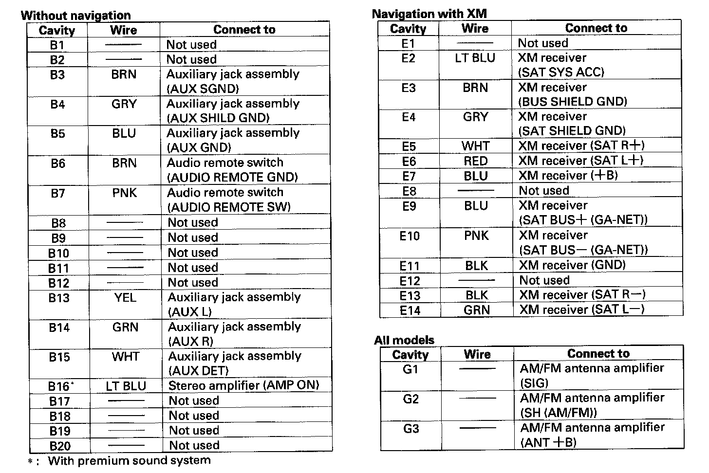
Audio Unit Connector for Inputs and Outputs
Stereo Amplifier Connector For Inputs And Outputs (with Premium Sound System, 2-door Model):

Stereo Amplifier Connector For Inputs And Outputs (with Premium Sound System, 2-door Model):

Stereo Amplifier Connector for Inputs and Outputs (With premium sound system, 2-door model)
Stereo Amplifier Connector For Inputs And Outputs (with Premium Sound System, '07 4-door Model):

Stereo Amplifier Connector For Inputs And Outputs (with Premium Sound System, '07 4-door Model):

Stereo Amplifier Connector for Inputs and Outputs (With premium sound system, '07 4-door model)
XM Receiver Connector For Inputs And Outputs:
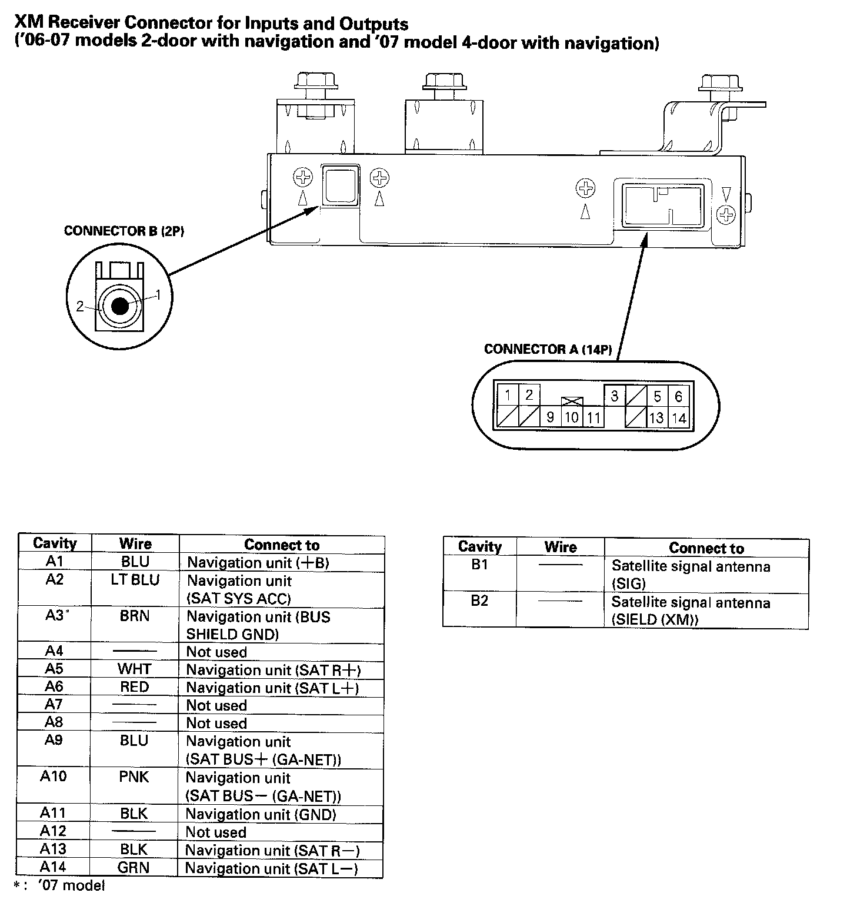
XM Receiver Connector for Inputs and Outputs
('06-07 models 2-door with navigation and '07 model 4-door with navigation)
Auxiliary Jack Assembly Connector For Inputs And Outputs:
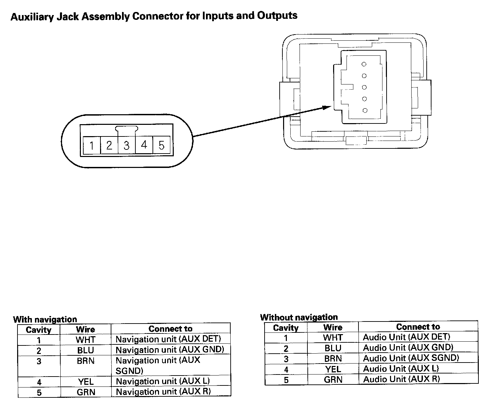
Auxiliary Jack Assembly Connector for Inputs and Outputs